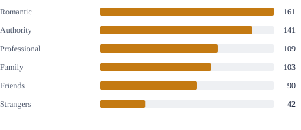
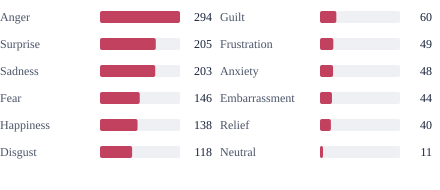
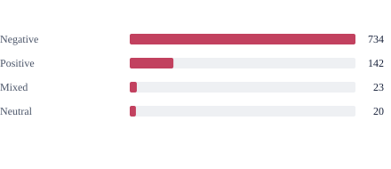
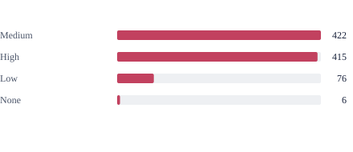
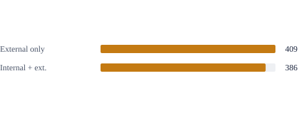

01
Human vs. Model Performance
GPT-5 (thinking) scores 20.40 points below humans.
On the same 50 questions per task, GPT-5 (thinking) averages 58.75, compared with 79.15 for humans. TRACER scores 63.58 on this subset.
Research manuscript
1Wuhan University 2National University of Singapore 3University of Oxford 4Harbin Institute of Technology (Shenzhen) *Corresponding author
Existing affective benchmarks often evaluate local targets such as affective states or causes. TRACE-Bench asks five complementary questions about one episode, from the conditions that give rise to an emotion, through the regulation that reshapes its expression, to the consequences it produces for the subject or other participants.
Condition, Affect, and Effect describe a subject-centered affective episode, with each stage grounded in a corresponding theory.
Select a task to highlight its supplied and queried constructs.
First-order
Second-order
Each task takes a multimodal social video with aligned subtitles as input. The tasks differ in which Blueprint constructs are supplied as known and which are queried, covering within-stage reasoning (T1–T2), cross-stage reasoning (T3–T4), and full-chain reconstruction (T5).






Statistics reported in the paper; scene and relationship counts are estimates. Emotion categories count labels, not QA pairs. Areas and segments show proportions; bars compare counts from zero.



Social clips from Movie-clips, EQ4You, and Social-IQ are screened by an MLLM and verified during annotation.
An MLLM drafts subject-centered chains; annotators reject, correct, add, and verify them against the video.
Templates convert each verified chain into task-specific QA pairs, followed by final human validation.
Open-source, closed-source, and affect-specialized MLLMs were evaluated on TRACE-Bench, alongside two diagnostic studies of their outputs.
01
GPT-5 (thinking) scores 20.40 points below humans.
On the same 50 questions per task, GPT-5 (thinking) averages 58.75, compared with 79.15 for humans. TRACER scores 63.58 on this subset.
02
The best emotion-focused model averages 21.47, compared with 57.96 for GPT-5 (thinking).
Each dot is one baseline's average over the five tasks on the full benchmark.
03
Models sometimes mistake what people show for what they actually feel.
In the tested moments where feelings and expressions differ, GPT-5 makes this mistake in 19% of descriptions and Qwen3-VL in 27%. Giving the models an analysis of each character's situation improves correct identification of feelings from 50% to 60% and from 40% to 51%, respectively.
04
For claims about what people do next, 17.3% are made up by GPT-5, compared with 3.3% by TRACER.
Full-chain outputs are checked against video frames and subtitles in External Reality, Manifestation, and Physical Effect. TRACER reduces the aggregate fabrication rate from 11.0% to 4.7%.
Each derivation step couples a natural-language inference with explicit premise citations drawn from factual observations, cognitive appraisals, and established upstream conclusions. The linked steps form a traceable graph of intermediate and target conclusions.
Select a conclusion to see the premises it cites.
Showing all premise links.
Differences are significant on every task (p < 0.05, bootstrap test, Holm-corrected). The largest gains appear in regulation decoding and cause reasoning.
Scores on the main evaluation set. Avg. averages the five tasks.
| Model | T1 Rec. | T2 Reg. | T3 Cause | T4 Effect | T5 Full | Avg. |
|---|---|---|---|---|---|---|
| Affect-specialized | ||||||
| Emotion-LLaMA | 0.45 | 5.22* | 2.26† | 0.31† | 0.20† | 1.69 |
| AffectGPT | 34.57 | 4.64† | 17.99* | 15.79* | 20.87* | 18.77 |
| Emotion-Qwen | 29.45* | 24.24* | 21.04* | 13.49 | 19.13* | 21.47 |
| Open-source general-purpose | ||||||
| LLaVA-OneVision-7B | 35.13 | 23.51 | 25.28 | 4.11 | 5.47† | 18.70 |
| LLaVA-NeXT-Video-32B | 25.89 | 27.01 | 27.13* | 23.61 | 13.80* | 23.49 |
| MiniCPM-V-4.5 | 37.30 | 29.19 | 43.04 | 28.27 | 29.43 | 33.45 |
| GLM-4.6V-Flash-9B | 40.80 | 28.85 | 42.30 | 28.81 | 32.36 | 34.62 |
| LLaVA-OneVision-70B | 42.74 | 26.73 | 47.30 | 33.03 | 34.62 | 36.88 |
| Qwen3-Omni-30B | 46.28 | 33.17 | 51.69 | 39.81 | 41.78 | 42.55 |
| InternVL3.5-38B | 45.35 | 28.05 | 46.16 | 32.19 | 37.07 | 37.76 |
| Qwen3-VL-32B | 50.97 | 35.49 | 60.42 | 44.38 | 50.16 | 48.28 |
| Closed-source general-purpose | ||||||
| GPT-5 (non-thinking) | 56.13 | 37.26 | 70.74 | 52.36 | 58.22 | 54.94 |
| Gemini-3-Pro | 54.32 | 40.55 | 70.74 | 51.48 | 56.05 | 54.63 |
| GPT-5 (thinking) | 56.61 | 41.56 | 77.11 | 53.75 | 60.79 | 57.96 |
| TRACER (ours) | 61.67 | 49.53 | 84.55 | 59.47 | 63.59 | 63.76 |
* marks cells with substantial parsing failures, and † cells where most outputs could not be parsed.
| Model / Human | T1 | T2 | T3 | T4 | T5 | Avg. |
|---|---|---|---|---|---|---|
| Human | 83.60 | 72.32 | 85.55 | 78.90 | 75.40 | 79.15 |
| GPT-5 (thinking) | 57.97 | 41.87 | 75.80 | 57.61 | 60.48 | 58.75 |
| GPT-5 (non-thinking) | 55.21 | 36.00 | 68.12 | 61.06 | 59.09 | 55.89 |
| Gemini-3-Pro | 55.59 | 41.53 | 68.00 | 60.19 | 54.18 | 55.90 |
| Qwen3-VL-32B | 50.56 | 34.26 | 63.66 | 49.00 | 50.68 | 49.63 |
| Qwen3-Omni-30B | 49.32 | 29.37 | 54.32 | 42.68 | 41.55 | 43.45 |
| InternVL3.5-38B | 48.00 | 28.64 | 44.05 | 34.94 | 35.16 | 38.16 |
| TRACER (ours) | 60.78 | 49.91 | 84.39 | 60.21 | 62.59 | 63.58 |
Human scores average two participants.
Joint subtitles and frames outperform either channel alone on all five tasks for both models. Doubling GPT-5's frames yields only small, inconsistent gains.
Fig. 7. Q: question and supplied fields. Frames: GPT-5 8, Qwen 60; Both (16f): GPT-5 with subtitles and 16 frames.
Affect-specialized models favor T1–T2; closed-source models favor T3 and T5. Open-source general-purpose models are more balanced but weaker on T5.
Fig. 6(b). Family- and task-centered preferences, not absolute rankings.
Models confuse similar emotions, tend to predict medium intensity, and often miss that positive and negative feelings can coexist.
Fig. 8. True → predicted labels; widths show within-class proportions.
TRACER is better than GPT-5 (thinking) at recognizing when people suppress or amplify their emotions.
Fig. 9. Reference rows, predicted columns, row percentages. Fabrication omitted.
Internal Driver scores lower across all evaluated models. Thinking narrows GPT-5's gap; TRACER leads on both components but retains the same imbalance.
Fig. 10. Dashed line: equal scores. Arrow: GPT-5 with thinking.
Physical Effect is hardest for general-purpose baselines. TRACER leads on Mental and Physical Effect, while Affective Effect remains close to GPT-5 (thinking).
Fig. 11. Other-directed instances only; dashed lines separate model families and TRACER.
Each panel shows the task input, selected observations and appraisal readings, the construct outputs, and a comparison with the reference and two baselines.
Fig. 12 from the paper. Click a panel to enlarge. Text is condensed from the source records; T1 comes from a separate illustrative run.
@misc{li2026trace,
title = {Cognition-Oriented Emotion Tracing from Causes
to Consequences in Real-World Social Scenes},
author = {Li, Hao and Zhang, Jinye and Li, Bobo and
Lee, Mong-Li and Hsu, Wynne and Wang, Zheng and
Fei, Hao and Zhang, Min},
year = {2026},
eprint = {2610.11410},
archivePrefix = {arXiv},
primaryClass = {cs.AI},
url = {https://arxiv.org/abs/2610.11410}
}